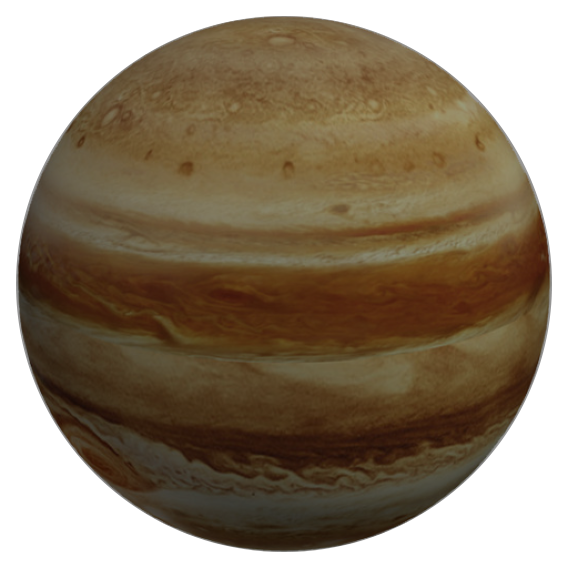

Юпитер
Крупнейшая планета Солнечной системы, пятая по удалённости от Солнца. Планета была известна людям с глубокой древности, что нашло своё отражение в мифологии и религиозных верованиях различных культур: месопотамской, вавилонской, греческой и других. Современное название Юпитера происходит от имени древнеримского верховного бога-громовержца.
радиус
69,911 км
спутники
более 80 спутников
тип планеты
газовый гигант
кольца
имеются слабые кольца
01
обзор
Планета хорошо заметна с Земли, из-за чего о ее существовании знали еще в Вавилоне в VIII веке до н.э. Птолемей во II веке создал геоцентрическую модель и определил, что Юпитер делает оборот вокруг Земли за 4332 дня. Спустя триста лет математик Ариабхата повторил опыты астронома и уточнил период обращения вплоть до часов.
Начиная со второй половины XIX века и по сей день ведется непрерывное наблюдение за Юпитером. Астрономы собирают сведения об объекте и пытаются составить полное представление о нем. Но технологиям еще предстоит сделать большой шаг вперед, прежде чем зонды смогут подобраться вплотную к поверхности Юпитера.
02
Особенности
Юпитер имеет кольца, правда они не так заметны, как у Сатурна. Они состоят преимущественно из пыли и мелкой крошки, которая удерживается за счет силы притяжения газового гиганта.
За время своего существования планета успела обзавестись большим количеством спутников. На данный момент их число составляет 80. Из-за внушительных размеров Юпитер был замечен еще древними людьми: в греции его называли “Звездой Зевса”, а астрономы из Китая подробно описали траекторию движения гиганта на протяжении двенадцати лет.
солнечные сутки
9 часов и 55 минут
орбитальная скорость
около 13.1км/с
температура поверхности
-145 градусов Цельсия
03
Строение
Юпитер представляет собой смесь из жидких и газообразных веществ. Атмосферный слой гиганта выполнен преимущественно из водорода (92%), остальная часть приходится на гелий (8%). Также незначительную долю веществ над поверхностью составляют фосфин, сера, этан, углерод, неон, сероводород и метан.
Под атмосферой находится слой газообразного водорода, в котором также растворен гелий и другие вещества. При углублении внутрь Юпитера можно наткнуться на следующий слой планеты, состоящий из жидкого водорода с аналогичными примесями.
В самом центре небесного тела находится ядро, причем ученые до сих пор не могут прийти к окончательному выводу, является ли оно идеально круглым или имеет скалистую форму. Его наличие было доказано в 1997-ом году, когда на Юпитере открыли гравитацию.
04
атмосфера
Газовый гигант обладает атмосферой в 1000 км, в которой давление варьируется от 20 до 220 кПА, что является довольно высоким показателем. Большую часть от веществ, находящихся над поверхностью, составляет водород (90%), второй по преобладанию компонент – гелий (10%). Также малая доля приходится на другие вещества.
Из-за изменения температуры, преобладания водорода и высокого давления учеными периодически наблюдаются полярные сияния на обоих полюсах.